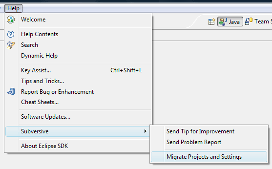

|
|
|
To migrate from Polarion.com Subversive version to Eclipse one firstly you should install Eclipse version into your environment. For the instructions on Subversive installation please refer the 'Subversive installation instructions' topic.
Please note that if you want to save your workspace settings related to SVN you shouldn't uninstall Polarion.com version before updating to the Eclipse one.
After the installation is compleate and Eclipse has restarted you should click on 'Help > Subversive > Migrate Projects and Settings' menu item for all workspaces which SVN settings should be saved. Then you are able to start using the updated version of Subversive.
Please note, that it is highly recommended to uninstall the Polarion.com version of Subversive only after performing the steps described above to avoid feather compatibility problems.